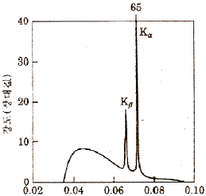
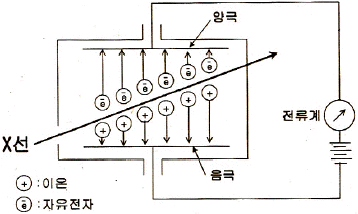
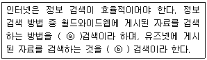

방사선비파괴검사기능사 (2011-10-09 기출문제)
1과목: 방사선투과시험법
1. 기포누설시험에 사용되는 발포액이 지녀야 하는 성질이 아닌 것은?
- 점도가 높을 것
- 적심성이 좋을 것
- 표면장력이 작을 것
- 시험품에 영향이 없을 것
(정답률: 72%)

2. 다음 중 자극에 관련된 설명으로 옳지 않은 것은?
- 물질내 자구는 자극을 갖고 있다.
- 같은 극끼리 반발하는 힘을 척력이라고 한다.
- 다른 극끼리 잡아당기는 힘을 중력이라고 한다.
- 자력선은 자석의 내부에서 S극에서 N극으로 이동한다.
(정답률: 86%)
3. 누설검사에 이용되는 가압 기체가 아닌 것은?
- 공기
- 황산가스
- 헬륨가스
- 암모니아가스
(정답률: 67%)
4. 결함검출 확률에 영향을 미치는 요인이 아닌 것은?
- 결함의 방향성
- 균질성이 있는 재료 특성
- 검사시스템의 성능
- 시험체의 기하학적 특징
(정답률: 42%)
5. 보어스코프(Bore-scope)나 파이버스코프(Fiber-scope)를 이용하여 검사하는 비파괴검사법은?
- 적외선검서(TT)
- 중성자투과검사(NRT)
- 육안검사(VT)
- 와전류탐상검사(ECT)
(정답률: 79%)
6. 방사선투과시험에 대한 설명으로 틀린 것은?
- 체적결함에 대한 검출감도가 높다.
- 결함의 깊이를 정확히 측정할 수 있다.
- 결함의 형상 또는 결함 길이의 정보가 양호하다.
- 건전부와 결함부에 대한 투과선량의 차이에 따라 필름 상의 농도차를 이용하는 시험방법이다.
(정답률: 78%)
7. 침투탐상검사에서 침투액의 종류를 구분하는 방법은?
- 모세관현상에 의한 침투능력과 깊이
- 침투액의 확산속도에 따른 침투시간
- 잉여침투액의 제거방법
- 사용하는 현상제와의 조합방법
(정답률: 58%)
8. 형광침투액을 사용한 침투탐상시험의 경우 자외선 등 아래에서 결함지시가 나타내는 일반적인 색은?
- 적색
- 자주색
- 황록색
- 검정색
(정답률: 67%)
9. 내마모성이 요구되는 부품의 표면 경화층 깊이나 피막두께를 측정하는데 쓰이는 비파괴검사법은?
- 초음파탐상검사(UT)
- 방사선투과검사(RT)
- 와전류탐상검사(ECT)
- 음향방출검사(AE)
(정답률: 69%)
10. 초음파탐상시험에서 기본공진주파수를 결정하는 공식은? (단, F : 기본공진주파수, V : 속도, T : 두께 이다.)
- F = V/T
- F = V/2T
- F = T/V
- F = V × T
(정답률: 54%)
11. 길이 0.4m, 직경 0.08m 인 시험체를 코일법으로 자분탐상검사할 때 필요한 암페어-턴(Ampere-Turn) 값은?
- 3000
- 5000
- 7000
- 9000
(정답률: 38%)
12. 방사선의 종류와 성질을 설명한 내용으로 틀린 것은?
- X 선과 γ 선은 전자파이다.
- α 선과 β 선은 입자의 흐름이다.
- X 선과 γ 선은 물질을 투과하는 성질이 있다.
- 방사선투과시험에는 α 선과 β 선이 주로 이용된다.
(정답률: 64%)
13. 강자성체 재료부, 주강품, 단강품의 표면 및 표면직하의 결함을 검출하는 시험방법은?
- 초음파탐상검사(UT)
- 누설검사(LT)
- 자분탐상검사(MT)
- 중성자투과검사(NRT)
(정답률: 73%)
14. 다른 비파괴검사법과 비교했을 때 와전류탐상검사의 장점에 속하지 않는 것은?
- 검사결과의 기록이 용이하다.
- 표면 아래 깊숙한 위치의 결함 검출이 용이하다.
- 비접촉법으로 검사속도가 빠르고 자동화에 적합하다.
- 결함크기 변화, 재질변화 등의 동시 검사가 가능하다.
(정답률: 70%)
15. 다음 중 반감기가 가장 짧은 방사성동위원소는?
- Co-60
- Cs-137
- Ir-192
- Tm-170
(정답률: 72%)
16. 필름에 입사한 방사선의 강도가 10R이고, 필름을 투과한 방사선의 강도가 5R이었다. 이 방사선 투과사진의 농도는 얼마인가?
- 0.3
- 0.5
- 1.0
- 2.0
(정답률: 32%)
17. 다음 중 방사선 투과실험에서 동일한 결함임에도 불구하고 조사 방향에 따라 식별하는데 가장 어려운 결함은?
- 균열
- 원형기공
- 개재물
- 용입불량
(정답률: 72%)
18. 선원송출방식의 감마선 조사기에서 감마선원이 들어 있는 곳은?
- 안내튜브
- 제어튜브
- 선원홀더
- 송출와이어
(정답률: 64%)
19. 중성자수는 동일하나 원자번호, 질량수가 다른 핵종을 무엇이라 하는가?
- 동중체
- 핵이성체
- 동위원소
- 동중성자핵
(정답률: 67%)
20. 형광스크린을 사용함으로써 얻을 수 있는 효과에 관한 설명으로 옳은 것은?
- 노출시간을 크게 감소시킨다.
- 사진 명료도가 크게 향상된다.
- 스크린 반점을 만들지 않는다.
- 감마선과 더불어 사용할 경우 높은 강화인자를 나타낸다.
(정답률: 40%)
2과목: 방사선안전관리 관련규격
21. 반가층에 관한 정의로 가장 적합한 것은?
- 방사선의 양이 반으로 되는데 걸리는 시간이다.
- 방사선의 에너지가 반으로 줄어드는데 필요한 어떤 물질의 두께이다.
- 어떤 물질에 방사선을 투과시켜 그 강도가 반으로 줄어들 때의 두께이다.
- 방사선의 인체에 미치는 영향이 반으로 줄어드는데 필요한 차폐체의 무게이다.
(정답률: 56%)
22. 방사선 투과사진의 선명도를 좋게 하기 위한 방법이 아닌 것은?
- 선원의 크기를 작게 한다.
- 산란방사선을 적절히 제어한다.
- 기하학적 불선명도를 크게 한다.
- 선원은 가능한 한 시험체의 수직으로 입사되도록 한다.
(정답률: 63%)
23. 다음 중 방사선 투과사진의 필름콘트라스트와 가장 관계가 깊은 것은?
- 물질의 두께
- 방사선 선원의 크기
- 노출의 범위
- 필름특성곡선의 기울기
(정답률: 64%)
24. 그림은 표적금속으로 몰리브덴을 사용한 X선관에 35kV의 관전압을 주었을 때의 X선 스펙트럼을 나타낸 것이다. 이 경우 백색 X선의 최단파장은 약 얼마인가?

- 0.035nm
- 0.065nm
- 0.075nm
- 0.095nm
(정답률: 67%)
25. 다음 중 X선으로부터 직접 또는 2차적으로 생성되는 전자가 아닌 것은?
- 오제전자
- 쌍생성 전자
- 컴프턴 전자
- 내부전환 전자
(정답률: 29%)
26. 흡수선량에 대한 SI단위로 그레이(Gy)를 사용한다. 10rad를 그레이(Gy)로 환산하면 얼마인가?
- 0.01Gy
- 0.1Gy
- 1Gy
- 10Gy
(정답률: 65%)
27. 주강품의 방사선 투과시험방법(KS D 0227)에 의해 투과사진을 등급분류할 때 흠이 선모양의 슈링키지인 경우 시험시야의 크기(지름)가 50mm, 호칭두께가 10mm이하일 때 2류의 허용 한계 길이는?
- 12mm
- 17mm
- 23mm
- 45mm
(정답률: 42%)
28. 알루미늄 주물의 방사선 투과시험방법 및 투과사진의 등급분류방법(KS D 0241)에서 방사선 투과사진 촬영시 사용되는 선원은 원칙적으로 조사시간에 적합한 어떤 에너지를 사용하도록 규정하고 있는가?
- 중간값 에너지
- 가장 낮은 에너지
- 산술평균 에너지
- 가장 높은 에너지
(정답률: 48%)
29. 강 용접 이음부의 방사선 투과시험방법(KS B0845)에서 강판의 원둘레 용접 이음부의 내부 필름촬영방법일 때 시험부의 유효 길이를 어떻게 규정하고 있는가?
- 관의 원둘레 길이의 1/3 이하
- 관의 원둘레 길이의 1/6 이하
- 관의 원둘레 길이의 1/9 이하
- 관의 원둘레 길이의 1/12 이하
(정답률: 47%)
30. 다음 중 방사선 방호량으로 방사선량에 확률적 영향이 포함된 선량단위는?
- Sv
- Gy
- Bq
- C/kg
(정답률: 47%)
31. 원자력법령에 의한 원자력이용시설의 방사선작업 종사자에 대하여 실시하는 건강진단시 반드시 검사하여야 할 필수 내용인 것은?
- 체중검사
- 전신건강검사
- 소변검사
- 백혈구수, 적혈구수
(정답률: 85%)
32. 티탄 용접부의 방사선 투과시험방법(KS D 0239)에 따른 재료 두께 20mm인 용접 부위 투과시험시에 시험부의 흠집이외 부분의 투과사진을 농도 범위로 옳은 것은?
- 1.3 이상 3.5 이하
- 1.5 이상 3.5 이하
- 1.8 이상 4.0 이하
- 2.0 이상 4.0 이하
(정답률: 36%)
33. 다음 중 그림과 같은 원리를 이용하는 방사선 계측기는?

- 필름뱃지
- 체렌코프계수관
- 비례계수관
- 신틸레이션검출기
(정답률: 62%)
34. 강 용점 이음부의 방사선 투과시험방법(KS B0845)에서 모재 두께 60mm인 강판 촬영에 대한 결함분류를 할 때 제1종 결함이 1개인 경우 결함 점수는 결함의 긴지름 치수로 구한다. 그러나 긴지름이 모재 두께의 얼마 이하일때 결함 점수로 산정하지 않는다고 규정하고 있는가?
- 1.0%
- 1.4%
- 2.0%
- 2.8%
(정답률: 36%)
35. 연간섭취한도(ALI)를 넘을 경우 다음 중 어떤 기준을 위반할 수 있는가?
- 선량한도
- 취업기간
- 작업시간
- 휴식시간
(정답률: 79%)
36. 방사선에 의한 만성장해 및 급성장해에 관한 설명으로 옳은 것은?
- 유전적 영향은 급성장해이다.
- 방사선 피폭에 의한 암은 급성장해이다.
- 홍반, 구토 등이 발생하면 급성장해라고 할 수 있다.
- 손의 과피폭시 화상이 발생하면 만성장해라고 할수 있다.
(정답률: 72%)
37. 다음 중 Co-60에 대한 반가층이 큰 것부터 작은 순서로 나열한 것으로 옳은 것은?
- 납판 ＞ 철판 ＞ 알루미늄 ＞ 흙
- 흙 ＞ 알루미늄 ＞ 철판 ＞ 납판
- 알루미늄 ＞ 납판 ＞ 흙 ＞ 철판
- 철판 ＞ 흙 ＞ 납판 ＞ 알루미늄
(정답률: 42%)
38. 강 용접 이음부의 방사선 투과시험방법(KS B0845)에 의한 상의 분류시 결함의 종별-종류의 연결이 옳은 것은?
- 제1종 - 텅스텐 혼입
- 제2종 - 융합 불량
- 제3종 - 용입 불량
- 제4종 - 블로홀
(정답률: 54%)
39. 비파괴검사용 화질지시계 - 원리 및 판정(KS A4⑤4)에서 규정하고 있는 바늘형 투과도계에 관한 설명으로 옳은 것은?
- 띠형은 7개의 선으로 구성된다.
- 일반형은 9개의 신으로 구성된다.
- 띠형은 동일 지름의 선으로 구성된다.
- 일반형은 동일 지름의 선으로 구성된다.
(정답률: 47%)
40. 강 용접 이음부의 방사선 투과시험방법(KS B0845)에 따라 결함의 점수를 계산할 때 결함이 시험시야의 경계선상에 위치할 경우 측정방법으로 옳은 것은?
- 시야 외의 부분도 포함하여 측정한다.
- 시야 외의 부분도 포함하지 않고 측정한다.
- 시야 외의 부분이 걸칠 때는 1/2 이상 걸칠 때만 포함하여 측정한다.
- 시야 외의 부분이 걸칠 때는 1/3 이상 걸칠 때만 포함하여 측정한다.
(정답률: 48%)
3과목: 금속재료일반 및 용접 일반
41. LAN 토폴로지 형태로 옳지 않은 것은?
- 성형
- 트리형
- 토큰형
- 버스형
(정답률: 22%)
42. 인터넷 사용 시 올바른 네티켓으로 가장 거리가 먼 것은?
- 전자우편을 비롯한 상대방의 정보를 훔쳐보거나 허가 없이 복사하는 일은 없도록 한다.
- 사이버 상에서 격렬한 논쟁이 지속되면 토론 그룹의 분위기가 나빠지거나 구성원들 사이의 질서가 깨질 수 있으니 유의한다.
- 내가 가진 정보가 남에게 큰 도움이 되지 않을 수도 있으니 절대 정보를 공유하지 않는다.
- 메일을 사용할 때는 반드시 다른 사람에게 피해를 줄 수 있는 악성 바이러스 프로그램은 첨부하지 않는 다.
(정답률: 48%)
43. 기억된 내용이 전원을 끄더라도 지워지지 않고 계속 남아 있는 기억 장치는?
- RAM
- ROM
- DRAM
- REGISTER
(정답률: 22%)
44. 도메인 네임(Domain Name)에 대한 설명으로 틀린 것은?
- 네트워크의 이름이 될 수 있다.
- 도메인 네임은 서로 중복되어 사용될 수 있다.
- 도메인 서버에서 도메인 네임이 IP 주소로 바뀌어 사용된다.
- 컴퓨터 이름, 기관 이름, 기관 성격, 국가 등이 표현된다.
(정답률: 37%)
45. 다음 중 ( )안에 들어갈 적절한 용어로 짝지어진 것은?

- ⓐ 파일, ⓑ 고퍼
- ⓐ 뉴스, ⓑ 웹 문서
- ⓐ 웹 문서, ⓑ 뉴스
- ⓐ 고퍼, ⓑ 파일
(정답률: 34%)
46. 금속에 열을 가하여 액체 상태로 한 후 고속으로 급랭시켜 원자의 배열이 불규칙한 상태로 만든 합금은?
- 형상기억합금
- 수소저장합금
- 제진합금
- 비정질합금
(정답률: 78%)
47. 시멘타이트의 자기 변태점 온도는?
- 210℃
- 410℃
- 723℃
- 768℃
(정답률: 36%)
48. 주철에서 어떤 물체에 진동을 주면 진동에너지는 그 물체에 흡수되어 점차 약화되면서 정지하게 되는 것과 같이 물체가 진동을 흡수하는 능력은?
- 감쇠능
- 유동성
- 연신능
- 용해능
(정답률: 74%)
49. 풀림(Annealing) 열처리의 가장 큰 목적은?
- 경화
- 연화
- 취성화
- 표준화
(정답률: 69%)
50. 탄소강에 함유된 원소 중 적열(고온)메짐의 원인이 되는 것은?
- P
- S
- Si
- Mn
(정답률: 65%)
51. 진공 또는 CO 의 환원성 분위기에서 용해 주조하여 만들며 O2 나 탈산제를 품지 않는 구리는?
- 전기 구리
- 전해 인성 구리
- 탈산 구리
- 무산소 구리
(정답률: 67%)
52. SM45C 시험편을 경도기로 경도값을 측정할 때 시험편에 눌린 흔적이 가장 크게 나타나는 경도시험은?
- 쇼어 경도시험
- 비커스 경도시험
- 로크웰 경도시험
- 브리넬 경도시험
(정답률: 39%)
53. 상온에서 면심입방격자(FCC)의 결정 구조를 갖는 것끼리 짝지어진 것은?
- Ba, Cr
- Ni, Ag
- Mg, Cd
- Mo, Li
(정답률: 61%)
54. Al의 표면적을 적당한 전해액 중에서 양극 산화 처리하면 표면에 방식성이 우수한 산화 피막 층이 만들어진다. 알루미늄의 방식 방법에 많이 이용되는 것은?
- 규산법
- 수산법
- 탄화법
- 질화법
(정답률: 45%)
55. 양백(nickel silver)의 주성분에 해당되지 않는 것은?
- Cu
- Ni
- Zn
- Sn
(정답률: 39%)
56. 심냉 처리의 목적이 아닌 것은?
- 시효변형을 방지한다.
- 치수의 변형을 방지한다.
- 강의 연성을 증가 시킨다.
- 잔류 오스테나이트를 마텐자이트화 한다.
(정답률: 34%)
57. 황동의 특성을 설명한 것 중 틀린 것은?
- Cu + Zn 의 합금이다.
- β고용체는 조밀육방격자이다.
- α고용체는 면심입방격자이다.
- 황동은 Cu에 비하여 주조성, 가공성 등이 좋다.
(정답률: 37%)
58. 피복아크 용접 시 모재 가운데 유황 함유량이 과대하거나 강재에 부착되어 있는 기름, 페인트, 녹 등의 원인으로 발생하는 결함으로 가장 적당한 것은?
- 기공
- 언더컷
- 오버랩
- 선상조직
(정답률: 67%)
59. 용접봉에서 모재로 용융금속이 옮겨가는 용적이행 형식이 아닌 것은?
- 단락형
- 블록형
- 스프레이형
- 글로뷸러형
(정답률: 50%)
60. 내용적 40L의 산소 용기에 130기압의 산소가 들어 있다. 1시간에 400L를 사용하는 토치를 써서 혼합비 1:1의 표준불꽃으로 작업을 한다면 몇 시간이나 사용할 수 있겠는가?
- 13
- 18
- 26
- 42
(정답률: 62%)
기포누설시험에서 발포액은 시험품의 표면에 발포하여 기포를 만들어내는 역할을 합니다. 이때 발포액의 점도가 높을수록 시험품 표면에 발포액이 잘 머무르게 되어 기포를 만들기 쉬워지기 때문에 점도가 높을 필요가 없습니다. 따라서 점도가 높을 것은 기포누설시험에 사용되는 발포액이 지녀야 하는 성질이 아닙니다.